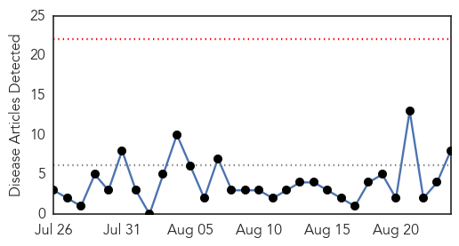
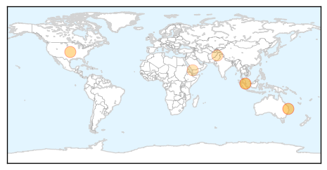

Measles
30-Day Web Trend
0 alerts, 0 warnings

30-Day Twitter Trend
0 alerts, 0 warnings

Article Locations
Article Confidences

Top Articles:
- 0.965
- Brisbane Health Authorities Warn Against Measles Outbreak
- 0.951
- Seventh case confirmed at UQ
- 0.921
- Controversial: Doctors in Khyber-Pakhtunkhwa say measles not epidemic
- 0.890
- Seven measles cases in five weeks at Queensland uni
- 0.853
- UN health workers vaccinate millions of children against polio and measles in war-ravaged Yemen
- 0.837
- More measles cases in Brisbane ‘may be likely’ as 7th UQ St. Lucia tests positive
- 0.796
- Time to treat violence in our city as a disease
- 0.579
- ANA issues immunization recommendation
Top Tweets:
-
No tweets found for Aug 24, 2015
Unknown
30-Day Web Trend
0 alerts, 6 warnings

30-Day Twitter Trend
3 alerts, 0 warnings

Article Locations

Article Confidences

Top Articles:
- 0.999
- Saudi Arabia Reports 6 New Cases of MERS
- 0.956
- Saudi Ministry of Health announces more cases of Corona VirusHealthcare
- 0.917
- Chicago Tribune
- 0.917
- Chicago Tribune
- 0.917
- Chicago Tribune
- 0.917
- Chicago Tribune
- 0.917
- Chicago Tribune
- 0.905
- Legionnaires’ Disease Sickens 127
- 0.872
- WHO steps up health response in Yemen as humanitarian situation worsens
- 0.872
- WHO steps up health response in Yemen as humanitarian situation worsens - Xinhua
- 0.871
- WHO steps up health response in Yemen as humanitarian situation worsens
- 0.859
- E. coli bacteria outbreak in Quebec makes 14 sick
- 0.843
- Calicivirus killing pet rabbits in Adelaide’s south
- 0.843
- Pet rabbits killed in virus outbreak
- 0.837
- Private hospitals in Bohol to open TB DOTS centers
- 0.825
- 4 Filipino nurses now have Mers in Saudi Arabia
- 0.801
- Critical health supplies reaching injured in southern Yemen
- 0.797
- Superbugs Reach a Tipping Point
- 0.785
- Yonkers School Positive for Legionnaires' Disease Bacteria
- 0.779
- Health minister Laxma Reddy tells Adivasis to shun superstitions
- 0.773
- Emergency services doctor 24/7
- 0.768
- Possibly exposed to rabies? Wash the area, call your doctor
- 0.768
- How Did A Rare, Vomit-Inducing Parasite Infect The Water Supply For 300,000 People?
- 0.749
- Bacteria isolated at children’s hospital
- 0.742
- Severity of algae in Iowa lakes increases
- 0.733
- Three Panhandle Counties See Rise in Lyme Disease
- 0.720
- Scientists unraveling the mysteries of rabbit fever
- 0.708
- UA student being treated for TB; Hundreds more will be tested fo
- 0.706
- Tours from Singapore to S. Korea cheaper after Mers outbreak
- 0.698
- First Facility In Westchester Tests Positive For Legionnaire’s Bacteria
- 0.693
- Michael Villaire named 2015 winner of prestigious Cecilia and Leonard Doak Health Literacy Champion Award
- 0.690
- The Caledonian-Record
- 0.687
- The mystery man who wrestled AK47 from the train gunman
- 0.687
- A good year for French wine despite drop in production
- 0.687
- French train suspect denies ties to terrorism
- 0.683
- Still much left to do on neglected tropical diseases - News
- 0.677
- Hollande and Merkel meet to tackle migrant crisis, Ukraine violence
- 0.667
- Chronic wasting disease spreading among Michigan deer
- 0.652
- 4 W.Va. counties declared endemic for Lyme disease
- 0.644
- SR1bn spent on treating Saudis abroad
- 0.636
- Inadequate training affecting health service delivery
- 0.634
- Fevers: Minister promises action
- 0.620
- State campaign promotes HPV vaccine to area families - TheAlpenaNews.com
- 0.604
- Lebanon’s garbage crisis deepens after weekend of unrest
- 0.594
- Newborn dies in hospital after infection
- 0.590
- Pneumonia kills 1 in 5 children below five years old – WHO
- 0.576
- Niger: Influx of Nigerian refugees in the Diffa region continues
- 0.571
- Health situation in North Darfur's Zamzam camp deteriorating - Sudan
- 0.568
- Daw Park Repatriation Hospital job cuts not ruled out by SA Health in closure update for staff
- 0.557
- Personal clothing may spread respiratory infections within the NICU
Showing top 50 articles...
Top Tweets:
- 0.593
- MERS: Despite obvious concerns so far the Hajj hasn't triggered spread of MERS though some Umrah pilgrims have become infected I think.